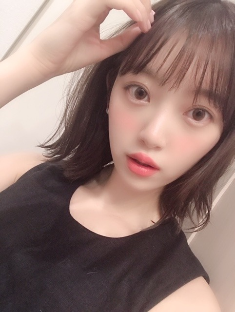
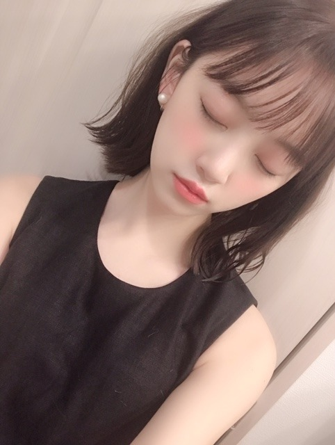
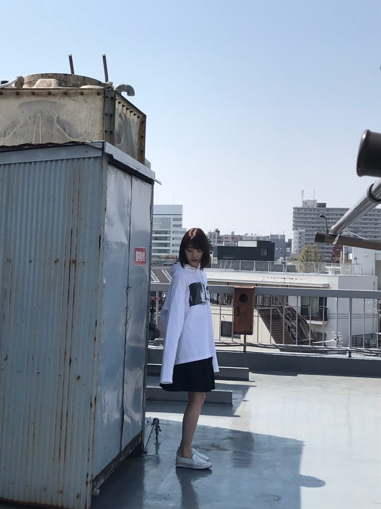

2019/0517Friフレンチレトロ
最近はヨーロッパの洋服に夢中です☺︎
絶妙な色味はもちろんデザインも個性的でかわいくて、特にフランスの洋服ブランドはレトロでガーリーでロマンティックで私の理想とする上品な女らしさが出る洋服ばかりなんです、、、
華奢さがある！
うーむ
かわいい！！
フランスの女の子がよくやってる
白い肌に、透き通る髪色に、赤いリップ
もいいですよね✨
私の母にもパリジェンヌ風ファッションを最近着てもらっていて親子揃ってフランスファッション意識です。笑
マレ地区のセレクトショップ巡りをいつかするのが夢☺︎

イガリシノブさんプロデュースブランドWHOMEEから新しく出たMATTE LIP crayonが全色かわいくて、愛用してます✨
マットだから発色も良くてベタつかないしなんとも言えないくすみ色がおしゃれ顔にしてくれて...かわいいの塊。
あと、イプサのひんやりする、かき氷リップも気になってますー！
リップは気づいたらたくさん集めちゃうなぁ...
IZ*ONEのユジンちゃんとカンちゃんと♡

カンちゃんとは、私がIZ*ONEさんのファンミーティングを松村さんと観に行かせていただいたときに、かわいいです！って話しかけてくださって、そこから仲良くなりました☺︎
和食を食べてお散歩少しして、
そのあとはユジンちゃんも合流して3人でお菓子を食べながらお話をしました！
たくさん笑って、楽しかった✨
また会えたらいいなぁ
日本語もすごく上手で、私も韓国語勉強しなきゃと思いました☺︎
国を超えた友達ができて嬉しいです！

そして、ar発売中です✨

来月発売の7月号では、初めて表紙をやらせていただきます（；＿；）
レギュラーモデルになってからいつかできたらいいなぁなんて夢見ていたので本当に嬉しくて、まだ夢みたいです...
あのarのかわいい色味、文字に囲まれた表紙に私がいると思うと...はあ、幸せです...
そしていつも皆さんがarを見てくださっているからこそ嬉しいお知らせができて、よかったです！
たくさんの方に見ていただけたら嬉しいな✨
メイクや美容のこと、私のこともたくさんインタビューしていただいたのでそちらも必見です！
にしても、夏ですな〜汗が止まらんよ〜

では！
2019/0513Mon愛がなんだってんだよ
愛がなんだ やっと、やっと！観てきました！
令和最初の映画館かも。
俳優陣の皆さんのリアリティかつどこか優しさもあるお芝居にもずっと引き込まれて終始瞬きを忘れていました
目、ひん剥いてたと思う...
あ、でも呼吸は整った状態で観れるんですよ。なんの話だって感じかもしれないですがめちゃくちゃまったりと観れます
あーこういう人いる
これはこうなるよなぁ
みたいな頷きが映画館にあふれてました。笑
だらだらとなんとなく始まるのが20代後半の恋愛...
映画を観ていて、酷いなぁ無いなぁと思っても決して誰かが悪いとか憎いみたいなのがなくて、不思議で、
多分こういう恋愛ばかりなんだろうなぁ あるあるなんだろうなぁ って思いました
深川さんの柔らかい笑顔にも胸がギュンギュンしました...素敵だったなぁ。会いたいなぁ〜
今泉力哉監督は、個人PVを2回撮っていただいたことがあって今泉監督が作り出す空気感が絶妙に居心地の良いものでして、いつかまた、御一緒させていただけるように私も頑張らねばっと思いました
そしてきゅんきゅんが全てじゃない恋愛映画がこれからもっともっと増えていったらいいなぁと思いました
ホットギミック もさまざまな年代の方に観ていただけたら嬉しいです


うふふ
昨日は母の日でしたね☺︎
お母さんに私がメイクをしてあげて、一緒にお出かけをしてささやかなプレゼントを渡しました。
お昼は2人が好きな、天ぷら定食。
食の好みも一緒だし、何より母の嬉しそうな笑顔が1番嬉しいです。
私はまだまだ母みたいな強い女性ではないけど人に優しいところや物事をはっきりと言えて行動できるところ、尊敬しています
一緒に住んでいるのに誰よりもTVや雑誌を見てくれていて、私の活躍を喜んでくれて...
もっと頑張らなきゃって凄く思うんです。お母さんや家族の為にも私は夢を叶え続けていきたいし、諦めたくないなって。
いつかの生放送の歌番組前に、お母さんから今から観るね！頑張ってね！ってメッセージがきてて、
でも本番は1度もカメラに抜かれなくて...
こんなことはよくあるし、普段は気にしないようにしているけど、テレビの前でたのしみに待っててくれたお母さんを想ったら、凄く申し訳ないのと悔しさが溢れてしまい、家に帰ってから大泣きしたことがあって。
もちろんポジションや曲の雰囲気で毎回カメラワークは違うし抜かれたらラッキーなのだから泣くほど...って思うかもしれないけど、私の頑張り不足でポジションが下がって、それで観てくれたお母さんはどう思ったんだろう、とか私も悔しいしお母さんもきっと悔しいのかなと思ったら凄く遣る瀬無い気持ちになって
でもそんなときにお母さんは優しく抱きしめて、頑張ったね^^って言ってくれました
強くて優しくて、いつも救われます
これからもたくさんお母さんの笑顔を見たいし、色んなところに一緒に行きたいなぁ
親孝行は、して凄いことじゃなくて、産んでくれて汗水流して自分の自由を犠牲にしながらここまで育ててくれた親に対しての感謝の気持ちや行動は、普通のことで当たり前だと思います...☺︎
皆さんも、ぜひ母の日に限らず普段から、家族や周りの人に"気持ち"を伝えていってください✨
笑顔や、幸せが広がりますように(^-^)
お母さんいつもありがとう
だいすき！
ブログ見てくれるかな？笑
ではは
2019/0510Friくすんだ色に惹かれがち
BOMBさん発売しましたー！
わーいわーい
パステル紫すきー！

はしゃぐ3人

ぜひ、みてください！
告知
発売中「ベツコミ」
発売中「BRODY」日奈子と表紙 2期特集
発売中「ヤングマガジン」飛鳥と与田ちゃんと梅ちゃんと表紙巻頭
発売中「週刊少年マガジン」掛橋ちゃん(もんちゃん)と表紙巻頭
発売中「BOMB」与田ちゃん梅ちゃんと表紙巻頭
発売中「FINEBOYS」
5/11「ar」
5/20「東海ウォーカー」
最近は、トマトジュースを持ち歩いています
あとパイル地の鮮やかなブルー色のレッスン着のズボンが着心地良くてリピート中。
書いていたら眠くなってきました...
ので...
この辺で...
ではは☺︎
2019/0507Tue雲がない空
6月28日公開 ホットギミック ガールミーツボーイ
の本予告が解禁されました☺︎
ムビチケが現在、上映劇場にて発売中です！
発売劇場など詳しくは↑動画をご覧ください
全国一万枚限定でデザインが変わるギミックファイルが付いてくるみたいです✨
そして最近は映画の取材もたくさんしていただいているので5月6月は日々、要チェックです(^-^)
ブログでもモバメでもお知らせしていきますね
17歳の平凡な女子高生、成田初ちゃんを演じるにあたってほぼほぼすっぴんで撮影をしていたので
普段の乃木坂の時のわたしとは見た目も結構違う、そんなところもポイントだったり。

今までの恋愛映画とはまた違う、新しい形の恋愛映画になっています。
傷に塗る消毒液みたいに、しみて、癒やす事ができたら嬉しいです
10代20代の方には、今、絶対に届いてほしいし出会って感じて気づいて大切にしてほしい
大人の方には忘れかけていた気持ちや過去の恋愛、人間関係、自分のあり方 いろんなことを思い出してほしい
そう願っています。
1人でも多くの方にこの作品に出会って良かった。と思っていただけたら嬉しいです。。
わたしは、山戸結希監督、スタッフの皆さんさん、キャストの皆さんに出会えて、そして原作ホットギミック、映画ホットギミックガールミーツボーイに出会えて、本当に良かったです！✨
そして今日19:30からは文化放送にて、
「文化放送ライオンズナイタースペシャル 堀未央奈が読むテレサ・テン」が放送されます！
初めての歌詞朗読。
大先輩であるテレサ・テンさんのご命日にやらせていただくということで、大変プレッシャーもありますが、頑張ります。
温かく見守ってくださったら嬉しいです...
そして改めて曲の素晴らしさを一緒に噛み締めていきたいなと思います☺︎
そして明日は掛橋ちゃんと表紙をやらせていただきました、週刊少年マガジンの発売日です✨
人懐っこくて可愛かったなぁ(^-^)
みてね〜



では
2019/0503FriSing Out！
新曲のMVが公開されました！

監督は、シンクロニシティでもお世話になった池田監督です
乃木坂メンバーが持つ世界観をぐんっと引き上げて映し出してくださる方で、映像の綺麗さはもちろん1人1人の繊細な表情や動きをも逃さず繋いでくださるので今回も池田監督に撮っていただけて嬉しくおもいます☺︎
Sing Out！は温かくも力強い歌詞に
なめらかで繊細で大胆な振り付け。
1人じゃない、誰かがいる、わたしがいる、みんながいる
目に見えるものが全てじゃない
手を取り合って手を差し出して握って、自分の為に誰かの為に前を向いて歩いていきたいと思っていただけたら嬉しいです
撮影はずっとダンスダンスでした
踊るって楽しい
楽屋ではハイテンション
ひなこ みりあ あやねと4人で座ってたのですがくだらない話をしたり唇型の飴をみんなで食べたり、ずっと爆笑。笑
楽しかったな^ ^
改めて2期の活躍、選抜を嬉しく思います
新曲は、5月29日発売です
よろしくお願いします！

そして今日から、
ホットギミック ガールミーツボーイの
ムビチケが下記劇場にて発売！
1万人様限定で"ギミックファイル"が付いてきます〜お早めに〜
では☺︎